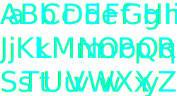

La fonte
Niagara rappelle la géométrie nette et élégante de certains des meilleurs styles américains des années 30 et 40. Les quatre graisses condensées ont été conçues par Tobias Frere-Jones, qui s'est inspiré des polices géométriques à côtés droits de cette époque.
Ses créateurs
Frere-Jones Type est un studio de création de caractères indépendant situé à New York, qui crée des caractères originaux pour des licences de vente au détail et des clients personnalisés. La société est dirigée par Tobias Frere-Jones et s'appuie sur ses trois décennies d'expérience dans les environnements imprimés et numériques.
Spécimen
Niagara Regular
Rappellant les années 30 et 40.
Inspiré des polices géométriques à côtés droits de cette époque.
Niagara Light
Un studio de création de caractères.
Indépendant situé à New-York.
Niagara Thin
Dirigée par Tobias Frere-Jones.
Qui a conçues les quatre graisses condensées.
Niagara Engraved Regular
Trois décennies d'expérience.
Dans les environnements imprimés et numériques.
Niagara Engraved Light
Crée des caractères originaux.
Pour des licences de vente au détail et des clients personnalisés.
tester
Niagara
Je suis à chasse étroite.
Niagara Engraved
Je suis principalement utilisé pour du titrage.
caractères
Ponctuations
! " ' ( ) + , - . / : ; < = > ? @ [ \ ] ^ _ ` ´¨ { | } ~ « » … – — “ ” ‘ ’ ⁄ ‹ › ‚ „ ˆ ˜ ¯ ˘ ˙ ˚ ¸ ˝ ˛ ˇ ( ) [ ] { } ! ¡ ? ¿ - – — ‹ › « » \ | / ‘ ’ “ ” ' " ~ + = < >
Ligatures
Æ Æ æ Œ Œ œ fi fl ff ffi ffl
Chiffres
0 1 2 3 4 5 6 7 8 9 0 1 2 3 4 5 6 7 8 9
Symboles
# $ % & * † ° ¢ £ § • ¶ ß ® © ™ Ø ¥ ª º ø ¿ ¡ √ ‡ · ‰ • ı ℗ & ª º † ‡ • · ¶ § ™ @ © ® ℗ # $ ¢ £ ¥ ƒ € % ‰ ⁄ ° √